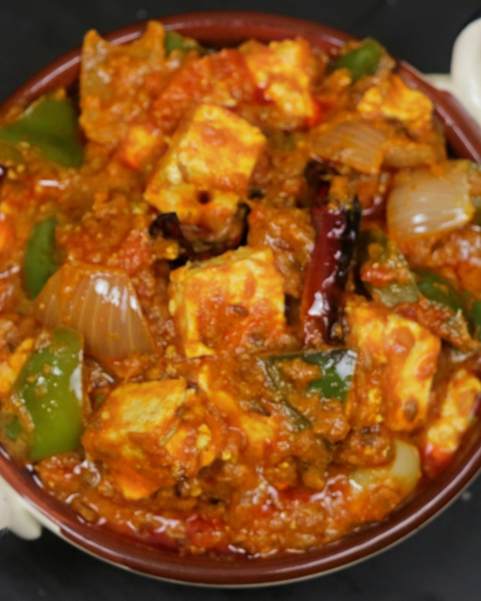

Kadhai Paneer

Description
Kadhai Paneer is a spicy, warming, flavorful and super delicious dish made by cooking paneer (cottage cheese) and bell peppers in a fragrant, fresh
ground spice powder. If you love the North Indian flavors and spicy foods, this dish is a must try! This restaurant style curry is best served with
Butter Naan, Roti, Jeera Rice, and Steamed Basmati Rice.
Ingredients
- Cottage Cheese 200-250 gm
- Onions 200-250 gm
- Tomatoes x3 medium sized
- Bell peppers 100-150 gm
- Coriander Seeds x2 tablespoons
- Kashmiri Red Chillies x1-2 dried and deseeded (leave this if cooking for kids)
- Cloves x2
- Cardmoms x2-3
- Cinnamon x1/4 inch piece
- Fennel Seeds x1 tablespoon
- Cashews x6
Steps
Make main spice mixture (Kadhai Masala)
- Prepare the following:-
- Cube 1 heaped cup onions(to saute, 1 medium, 125 grams after prep)
- Chop/cube 1.5 to 2 cup tomatoes (3 medium tomatoes, 300 grams after prep)
- Cube 1 more medium onion (seperate the layers)
- Cube 0.5 cup capsicum/ bell peppers, preferably the same size as paneer
- Measure 2 cups cubed paneer (3/4 inch, 200 to 250 grams)s
- To make the main spice mix, add the following ingredients to a grinder jar:
- 2 tablespoons coriander seeds
- 1 to 2 kashmiri deseeded dried chillies (leave out if cooking for kids)
- 1 tablespoon fennel seeds
- 2 to 3 green cardmoms
- 2 cloves
- 1/4 inch very small piece of cinnamon (if you add more you will ruin the dish)
If your spices are soft due to weather conditions, you may toast them first in a pan until crunchy, cool
and grind them. Preferably keep the spices in a refrigerator.
- Grind to a fine powder. Kadhai masala (main spice mix) is usually ground to a coarse powder. But if you leave it too coarse
you may get grits in the gravy. So make sure it is fine or slightly coarse.
Make Onion Tomato Masala/spice mix
- Heat in a pan with half tablespoon oil on a high flame. Saute 1 heaped cup of cubed onions along with 6 cashews
until they turn transparent or lightly golden.
- Add 1.5 to 2 cups chopped tomatoes and continue to saute on a medium heat until tomatoes turn mushy and soft. If needed add little
salt or cover and cook to speed up the cooking.
- After cooking, wait for it to cool down.
- Add the cooled off onion and tomatoes to a grinder jar.
- Blend it to smooth paste without adding water.
Make Kadhai Paneer
- Add another half tablespoon of oil or ghee to the pan and heat up on a high flame. To get the restaurant style smoky flavor,
use the same pan used for sauteing onion tomatoes earlier. Add bell peppers and onions, saute on a high flame just until half cooked
(must remain crunchy). Constantly stir to cook from both sides and prevent burning.
- Add cottage cheese. Make sure it is not too moist before you add. Toss it in the hot pan for 60 to 90 seconds on a medium heat.
Less than 2 mins. Do not overcook else the cheese will turn hard. Transfer all these to a plate.
- Add 1 tablespoon oil or ghee and heat it on a medium flame. Saute 1 teaspoon ginger and garlic paste until the raw smell goes away
- Add the ground spices- kadhai masala (main spice mix) and saute it well on a medium to low heat. We have not toasted the spices earlier
so we need to do it well here until it turn aromatic and the raw flavor goes away.
- Add onion tomato puree.
- Saute it well for about 2 mins. Add half tsp kashmiri red chill powder.
- Next saute well for 2 ins again. You may taste the onion tomato masala/ spice mix first and then add more red chilli powder as needed.
Since we have sauteed onions and tomatoes well in the earlier steps, we don't need to cook the spice mix a lot.
Make Kadhai Paneer Gravy
- Add 1.5 to 2 cups water and add 1.5 teaspoon salt. Mix well and bring this to a boil on a medium high heat.
- Reduce the heat and cook until the gravy turns thick and flavorful. Make sure the gravy does'nt look runny at this stage.
After boiling it well, you should see traces of oil on top of the gravy. Next towards the end add 1 teaspoon crushed kasuri methi.
- Add the sauteed onion, bell pepper and paneer that we had set aside. Mix well and turn off the stove. Check the taste and add more
salt and garam masala if required.
- Mix well. Add ginger juliennes and chopped coriander leaves. Cover and set aside for 2 mins. Do not leave on the stove since the
dying heat will cook it further. Transfer to a serving bowl.
Allow kadhai paneer to rest for a t least 15 mins so the paneer absorbs the flavors.